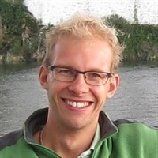

| Arnold
Moene Associate professor (>Meteorology and Air Quality Group) |
concept roject management meteorology contents |
|
| Jordi
Vila-Guerau de Arellano Professor of Meteorology (>Meteorology and Air Quality Group) |
CLASS
model scientific method meteorology contents |
|
| Antonija
Rimac-van Heerwaarden Online course developer (>Meteorology and Air Quality Group) |
concept →
reality development of texts, assignments, figures |
|
| Josette
Jacobs Assistant professor (Philosophy Group) |
philosophy
of science personal checklist |
|
| Bart
Gremmen Professor of Ethics in Life Sciences (Philosophy Group) |
philosophy of science | |
| Sanne
Mirck Educational designer (Open and online education) |
support in the development stage | |
 |
Gwenda
Frederiks Educational designer (Open and online education) |
support
in the development stage support in the implementation stage feedback on online didactics and texts |
| Thessa
Mobach Project assistant (Open and online education) |
support in
the implementation stage monitoring of progress |
|
|  |
Durk
Veenstra Online course developer (>Meteorology and Air Quality Group) |
initial
concept development first pilot |